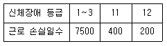
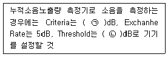
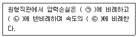
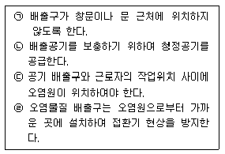
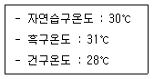
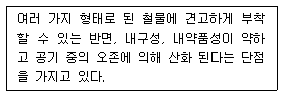
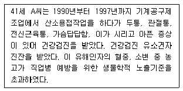
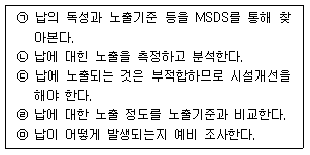
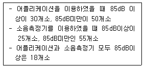

산업위생관리기사 (2017-03-05 기출문제)
1과목: 산업위생학개론
1. 작업대사량(RMR)을 계산하는 방법이 아닌 것은?
- 작업대사량/기초대사량
- 기초작업대사량/작업대사량
- 작업시열량소비량-안정시열량소비량/기초대사량
- 작업시산소소비량-안정시열산소소비량/기초대사시산소소비량
(정답률: 77%)

2. 정상 작업역을 설명한 것으로 맞는 것은?
- 전박을 뻗쳐서 닿는 작업영역
- 상지를 뻗쳐서 닿는 작업영역
- 사지를 뻗쳐서 닿는 작업영역
- 어깨를 뻗쳐서 닿는 작업영역
(정답률: 72%)
3. 방직공장의 면분진 발생 공정에서 측정한 공기 중 면분진 농도가 2시간 2.5mg/m3, 3시간은 1.8mg/m3, 3시간은 2.6mg/m3일 때, 해당 공정의 시간가중 평균노출기준 환산값은 약 얼마인가?
- 0.86mg/m3
- 2.28mg/m3
- 2.35mg/m3
- 2.60mg/m3
(정답률: 81%)
4. 산업피로의 발생현상(기전)과 가장 관계가 없는 것은?
- 생체 내 조절기능의 변화
- 체내 생리대사의 물리 · 화학적 변화
- 물질대사에 의한 피로물질의 체내 축적
- 산소와 영양소 등의 에너지원 발생 증가
(정답률: 88%)
5. 스트레스 관리 방안 중 조직적 차원의 대응책으로 가장 적합하지 않은 것은?
- 직무 재설계
- 적절한 시간 관리
- 참여 의사 결정
- 우호적인 직장 분위기 조성
(정답률: 65%)
6. 산업안전보건법상 근로자 건강진단의 종류가 아닌 것은?
- 퇴직후건강진단
- 특수건강진단
- 배치전건강진단
- 임시건강진단
(정답률: 89%)
7. 산업위생의 목적과 가장 거리가 먼 것은?
- 근로자의 건강을 유지 · 증진시키고 작업 능률을 향상시킴
- 근로자들의 육체적, 정신적, 사회적 건강을 유지 · 증진시킴
- 유해한 작업환경 및 조건으로 발생한 질병을 진단하고 치료함
- 작업 환경 및 작업 조건이 최적화되도록 개선하여 질병을 예방함
(정답률: 88%)
8. 어떤 사업장에서 70명의 종업원이 1년간 작업하는데 1급 장해 1명, 12급 장해 11명의 신체장해가 발생하였을 때 강도율은? (단, 연간 근로일수는 290일, 일 근로시간은 8시간이다.)

- 59.7
- 72.0
- 124.3
- 360.0
(정답률: 71%)
9. 우리나라 산업위생 역사와 관련된 내용 중 맞는 것은?
- 문송면 - 납 중독 사건
- 원진레이온 - 이황화 탄소 중독 사건
- 근로복지공단 - 작업환경측정기관에 대한 정도관리제도 도임
- 보건복지부 - 산업안전보건법 · 시행령 · 시행 규칙의 제정 및 공포
(정답률: 83%)
10. 에틸벤젠(TLV-100ppm)을 사용하는 작업장의 작업시간이 9시간일 때에는 허용기준을 보정하여야 한다. OSHA 보정방법과 Breig&Scala 보정방법을 적용하였을 때 두 보정된 허용기준치 간의 차이는 약 얼마인가?
- 2.2ppm
- 3.3ppm
- 4.2ppm
- 5.6ppm
(정답률: 63%)
11. 산업안전보건법상 제조 등 금지 대상 물질이 아닌 것은?
- 황린 성냥
- 청석면, 갈석면
- 디클로로벤지딘과 그 염
- 4-니트로니페닐과 그 염
(정답률: 55%)
12. 각 개인의 육체적 작업 능력(PWC, physical work capacity)을 결정하는 요인이라고 볼 수 없는 것은?
- 대사정도
- 호흡기계 활동
- 소화기계 활동
- 순환기계 활동
(정답률: 76%)
13. 미국산업위생학술원(AAIH)이 채택한 유리강령 중 기업주와 고객에 대한 책임에 해당하는 내용은?
- 일반 대중에 관한 사항은 정직하게 발표한다.
- 위험 요소와 예방 조치에 관하여 근로자와 상담한다.
- 성실과 학문적 실력 면에서 최고 수준을 유지한다.
- 궁극적으로 기업주와 고객보다 근로자의 건강 보호에 있다.
(정답률: 66%)
14. 산업안전보건법상 입자상 물질의 농도 평가에서 2회 이상 측정한 단시간 노출 농도값이 단시간노출기준과 시간가중평균기준값 사이일 때 노출기준 초과로 평가해야 하는 경우가 아닌 것은?
- 1일 4회를 초과하는 경우
- 15분 이상 연속 노출되는 경우
- 노출과 노출 사이의 간격이 1시간 이내인 경우
- 단위작업장소의 넓이가 30평방미터 이상인 경우
(정답률: 79%)
15. 산업안전보건법상 허용기준 대상 물질에 해당하지 않는 것은?
- 노말헥산
- 1-브로모프로판
- 포름알데히드
- 디메틸포름아미드
(정답률: 58%)
16. 사무실 등의 실내환경에 대한 공기질 개선 방법으로 가장 적합하지 않은 것은?
- 공기청정기를 설치한다.
- 실내 오염원을 제어한다.
- 창문 개방 등에 따른 실외 공기의 환기량을 증대시킨다.
- 친환경적이고 유해공기오염물질의 배출저도가 낮은 건축자재를 사용한다.
(정답률: 72%)
17. 공간의 효율적인 배치를 위해 적용되는 원리로 가장 거리가 먼 것은?
- 기능성 원리
- 중요도의 원리
- 사용빈도의 원리
- 독립성의 원리
(정답률: 84%)
18. 어떤 유해요인에 노출될 때 얼마만큼의 환자 수가 증가되는지를 설명해 주는 위험도는?
- 상대 위험도
- 인자 위험도
- 기여 위험도
- 노출 위험도
(정답률: 59%)
19. 산업재해가 발생할 급박한 위험이 있거나 중대재해가 발생하였을 경우 취하는 행동으로 적합하지 않은 것은?
- 근로자는 직상급자에게 보고한 후 해당 작업을 즉시 중지시킨다.
- 사업주는 즉시 작업을 중지시키고 근로자를 작업 장소로부터 대피시켜야 한다.
- 고용노동부 장관은 근로감독관 등으로 하여금 안전 · 보건진단이나 그 밖의 필요한 조치를 하도록 할 수 있다.
- 사업주는 급박한 위험에 대한 합리적인 근거가 있을 경우에 작업을 중지하고 대피한 근로자에게 해고 등의 불리한 처우를 해서는 안 된다.
(정답률: 81%)
20. 산업피로에 대한 대책으로 맞는 것은?
- 커피, 홍차, 엽차 및 비타민 B1은 피로회복에 도움이 되므로 공급한다.
- 피로한 후 장시간 휴식하는 것이 휴식시간을 여러 번으로 나누는 것보다 효과적이다.
- 움직이는 작업은 피로를 가중시키므로 될수록 정적인 작업으로 전환하도록 한다.
- 신체 리듬의 적응을 위하여 야간 근무는 연속으로 7일 이상 실시하도록 한다.
(정답률: 78%)
2과목: 작업위생측정 및 평가
21. 작업장의 현재 총 흡음량은 600sabins이다. 천장과 벽 부분에 흡음재를 사용하여 작업장의 흡음량을 3000sabins 추가하였을 때 흡음 대책에 따른 실내 소음의 저감량(dB)은?
- 약 12
- 약 8
- 약 4
- 약 3
(정답률: 72%)
22. 일정한 부피조건에서 압력과 온도가 비례한다는 표준 가스에 대한 법칙은?
- 보일 법칙
- 샤를 법칙
- 게이-루삭 법칙
- 라울트 법칙
(정답률: 70%)
23. 분석기기가 검출할 수 있는 신뢰성을 가질 수 있는 양인 정량한계(LOQ)는?
- 표준편차의 3배
- 표준편차의 3.3배
- 표준편차의 5배
- 표준편차의 10배
(정답률: 69%)
24. 작업 환경 측정 결과 측정치가 5, 10, 15, 15, 10, 5, 7, 6, 9, 6의 10개일 때 표준편차는? (단, 단위=ppm)
- 약 1.13
- 약 1.87
- 약 2.13
- 약 3.76
(정답률: 46%)
25. 1 N-HCI(F=1.000) 500mL를 만들기 위해 필요한 진한 염산(비중 : 1.18, 함량 : 35%)의 부피(mL)는?
- 약 18
- 약 36
- 약 44
- 약 66
(정답률: 39%)
26. 공장에서 A용제 30%(TLV 1200mg/m3), B용제 30%(TLV 1400mg/m3) 및 C용제 40%(TLV 1600mg/m3)의 중량비로 조성된 액체용제가 증발되어 작업 환경을 오염시킨 경우 이 혼합물의 허용농도(mg/m3)는? (단, 상가작용 기준)
- 약 1400
- 약 1450
- 약 1500
- 약 1550
(정답률: 73%)
27. 고열 측정구분에 따른 측정기기와 측정 시간을 연결로 틀린 것은? (단, 고용노동부 고시 기준)
- 습구온도 - 0.5도 간격의 눈금이 있는 아스만통풍건습계 - 25분 이상
- 습구온도 - 자연습구온도를 측정할 수 있는 기기 - 자연습구온도계 5분 이상
- 흡구 및 습구흑구온도 - 직경이 5센티미터 이상인 흑구온도계 또는 습구흑구온도를 동시에 측정할 수 있는 기기 - 직경이 15센티미터일 경우 15분 이상
- 흡구 및 습구흑구온도 - 직경이 5센티미터 이상인 흑구온도계 또는 습구흑구온도를 동시에 측정할 수 있는 기기 - 직경이 7.5센티미터 또는 5센티미터일 경우 5분 이상
(정답률: 63%)
28. 유량, 측정시간, 회수율, 분석에 의한 오차가 각각 10, 5, 7, 5%였다. 만약 유량에 의한 오차(10%)를 5%로 개선시켰다면 개선 후의 누적 오차(%)는?
- 약 8.9
- 약 11.1
- 약 12.4
- 약 14.3
(정답률: 71%)
29. 작업장 내 톨루엔 노출농도를 측정하고자 한다. 과거의 노출농도는 평균 50ppm이었다. 시료는 활성탄관을 이용하여 0.2L/min의 유량으로 채취한다. 톨루엔의 분자량은 92, 가스크로마토 그래피의 정량한계(LOQ)는 시료 당 0.5mg이다. 시료를 채휘해야 할 최소한의 시간(분)은? (단, 작업장 내 온도는 25℃)
- 10.3
- 13.3
- 16.3
- 19.3
(정답률: 63%)
30. 직경분립충돌기에 관한 설명으로 틀린 것은?
- 흡입성, 흉곽성, 호흡성 입자의 크기별 분포와 농도를 계산할 수 있다.
- 호흡기의 부분별로 침착된 입자 크기를 추정할 수 있다.
- 입자의 질량크기분포를 얻을 수 있다.
- 되튐 또는 과부하로 인한 시료 손실이 없어 비교적 정확한 측정이 가능하다.
(정답률: 82%)
31. 작업장 내의 오염물질 측정 방법인 검지관법에 관한 설명으로 옳지 않은 것은?
- 민감도가 낮다.
- 특이도가 낮다.
- 측정 대상 오염물질의 동정 없이 간편하게 측정할 수 있다.
- 맨홀, 밀폐 공간에서의 산소가 부족하거나 폭발성 가스로 인하여 안전이 문제가 될 때 유용하게 사용될 수 있다.
(정답률: 76%)
32. 옥내의 습구흑구온도지수(WBGT)를 산출하는 공식은?
- WBGT=0.7NWB+0.2GT+0.1DT
- WBGT=0.7NWB+0.3GT
- WBGT=0.7NWB+0.1GT+0.2DT
- WBGT=0.7NWB+0.1GT
(정답률: 83%)
33. 유기용제 채취 시 적정한 공기채취용량(또는 시료채취시간)을 선정하는 데 고려하여야 하는 조건으로 가장 거리가 먼 것은?
- 공기 중의 예상농도
- 채취 유속
- 채취 시료 수
- 분석기기의 최저 정량한계
(정답률: 57%)
34. 가스크로마토그래피(GC)분석에서 분해능(또는 분리도)을 높이기 위한 방법이 아닌 것은?
- 시료의 양을 적게 한다.
- 고정상의 양을 적게 한다.
- 고체 지지체의 입자 크기를 작게 한다.
- 분리관(column)의 길이를 짧게 한다.
(정답률: 66%)
35. 소음 측정에 관한 설명 중 ( )에 알맞은 것은? (단, 고용노동부 고시 기준)

- ㉠ 70, ㉡ 80
- ㉠ 80, ㉡ 70
- ㉠ 80, ㉡ 90
- ㉠ 90, ㉡ 80
(정답률: 83%)
36. 시료 측정 시 측정하고자 하는 시료의 피크와는 전혀 관계없는 피크가 크로마토그램에 때때로 나타나는 경우가 있는데 이것을 유령피크(Ghost peak)라고 한다. 유령피크의 발생 원인으로 가장 거리가 먼 것은?
- 칼럼이 충분하게 묵힘(aging)되지 않아서 칼럼에 남아 있는 성분들이 배출되는 경우
- 주입부에 있던 오염물질이 증발되어 배출되는 경우
- 운반기체가 오염된 경우
- 주입부에 사용하는 격막(septum)에서 오염물질이 방출되는 경우
(정답률: 55%)
37. 작업장에 소음 발생 기계 4대가 설치되어 있다. 1대 가동 시 소음 레벨을 측정한 결과 82dB을 얻었다면 4대 동시 작동 시 소음 레벨(dB)은? (단, 기타 조건은 고려하지 않음)
- 89
- 88
- 87
- 86
(정답률: 77%)
38. 원자흡광분석기에 적용되어 사용되는 법칙은?
- 반데르발스(Van der Waals)법칙
- 비어-람버트(Beer-Lambert)법칙
- 보일-샤를(Boyle-Charles)법칙
- 에너지보존(Energy Conservation)법칙
(정답률: 72%)
39. 노출 대수정규분포에서 평균 노출을 가장 잘 나타내는 대푯값은?
- 기하평균
- 산술평균
- 기하표준편차
- 범위
(정답률: 56%)
40. 실리카겔 흡착에 대한 설명으로 틀린 것은?
- 실리카겔은 규산나트륨과 황산의 반응에서 유도된 무정형의 물질이다.
- 극성을 띠고 흡습성이 강하므로 습도가 높을수록 파과 용량이 증가한다.
- 추출액이 화학분석이나 기기분석에 방해 물질로 작용하는 경우가 많지 않다.
- 활성탄으로 채취가 어려운 아닐린, 오르쏘-톨루이딘 등의 아민류나 몇몇 무기물질의 채취도 가능하다.
(정답률: 60%)
3과목: 작업환경관리대책
41. 다음의 ( )에 들어갈 내용이 알맞게 조합된 것은?

- ㉠ 송풍관의 길이, ㉡ 송풍관의 직경, ㉢ 제곱
- ㉠ 송풍관의 직경, ㉡ 송풍관의 길이, ㉢ 제곱
- ㉠ 송풍관의 길이, ㉡ 속도압, ㉢ 세제곱
- ㉠ 속도압, ㉡ 송풍관의 길이, ㉢ 세제곱
(정답률: 69%)
42. 산업위생보호구와 가장 거리가 먼 것은?
- 내열 방화복
- 안전모
- 일반 장갑
- 일반 보호면
(정답률: 70%)
43. 방진마스크에 대한 설명으로 가장 거리가 먼 것은?
- 방진마스크는 인체에 유해한 분진, 연무, 흄, 미스트, 스프레이 입자를 작업자가 흡입하지 않도록 하는 보호구이다.
- 방진마스크의 종류에는 격리식과 직결식, 면체여과식이 있다.
- 방진마스크의 필터에는 활성탄과 실리카겔이 주로 사용된다.
- 비휘발성 입자에 대한 보호만 가능하며, 가스 및 증기로부터의 보호는 안 된다.
(정답률: 74%)
44. 전체 환기의 목적에 해당되지 않는 것은?
- 발생된 유해물질을 완전히 제거하여 건강을 유지 · 증진한다.
- 유해물질의 농도를 감소시켜 건강을 유지 · 증진한다.
- 화재나 폭발을 예방한다.
- 실내의 온도와 습도를 조절한다.
(정답률: 78%)
45. 덕트 주관에 45°로 분지관이 연결되어 있다. 주관과 분지관의 반송속도는 모두 18m/s이고, 주관의 압력손실계수는 0.2이며, 분지관의 압력손실계수는 0.28이다. 주관과 분지관의 합류에 의한 압력손실(mmH2O)은? (단, 공기밀도=1.2kg/m3)
- 9.5
- 8.5
- 7.5
- 6.5
(정답률: 36%)
46. 레이놀드수(Re)를 산출하는 공식은? (단, d ; 덕트직경(m), v : 공기유속(m/s)), u : 공기의 점성계수(kg/sec · m), p : 공기밀도(kg/m3))
- Re=(u×p×d)/v
- Re=(p×v×u)/d
- Re=(d×v×u)/p
- Re=(p×d×v)/u
(정답률: 78%)
47. 송풍기의 전압이 300mmH2O이고 풍량이 400m3/min, 효율이 0.6일 때 소요동력(kW)은?
- 약 33
- 약 45
- 약 53
- 약 65
(정답률: 71%)
48. 움직이지 않는 공기 중으로 속도 없이 배출되는 작업조건(작업공정 : 탱크에서 증발)의 제어속도 범위(m/s)는? (단, ACGIH 권고 기준)
- 0.1~0.3
- 0.3~0.5
- 0.5~1.0
- 1.0~1.5
(정답률: 60%)
49. 방사날개형 송풍기에 관한 설명으로 틀린 것은?
- 고농도 분지함유 공기나 부식성이 강한 공기를 이송시키는 데 많이 이용된다.
- 깃이 평판으로 되어 있다.
- 가격이 저렴하고 효율이 높다.
- 깃의 구조가 분진을 자체 정화 할 수 있도록 되어 있다.
(정답률: 67%)
50. 30000ppm의 테트라클로로에틸렌(tetrachloro-ethylene)이 작업 환경 중의 공기와 완전 혼합되어 있다. 이 혼합물의 유효비중은? (단, 테트라클로로에틸렌은 공기보다 5.7배 무겁다.)
- 약 1.124
- 약 1.141
- 약 1.164
- 약 1.186
(정답률: 60%)
51. 귀덮개 착용 시 일반적으로 요구되는 차음 효과는?
- 저음에서 15dB 이상, 고음에서 30dB 이상
- 저음에서 20dB 이상, 고음에서 45dB 이상
- 저음에서 25dB 이상, 고음에서 50dB 이상
- 저음에서 30dB 이상, 고음에서 55dB 이상
(정답률: 74%)
52. 강제 환기를 실시할 때 환기효과를 제고할 수 있는 필요 원칙을 모두 고른 것은?

- ㉠, ㉡
- ㉠, ㉡, ㉢
- ㉠, ㉡, ㉣
- ㉠, ㉡, ㉢, ㉣
(정답률: 69%)
53. 송풍기의 효율이 큰 순서대로 나열된 것은?
- 평판송풍기 ＞ 다익송풍기 ＞ 터보송풍기
- 다익송풍기 ＞ 평판송풍기 ＞ 터보송풍기
- 터보송풍기 ＞ 다익송풍기 ＞ 평판송풍기
- 터보송풍기 ＞ 평판송풍기 ＞ 다익송풍기
(정답률: 67%)
54. 후드로부터 0.25m 떨어진 곳에 있는 공정에서 발생되는 먼지를, 제어속도가 5m/s, 후드직경이 0.4m인 원형 후드를 이용하여 제거하고자 한다. 이때 필요환기량(m3/min)은? (단, 프랜지 등 기타 조건은 고려하지 않음)
- 약 2⑤
- 약 215
- 약 225
- 약 235
(정답률: 64%)
55. 배출원이 많아서 여러 개의 후드를 주관에 연결한 경우(분지관의 수가 많고 덕트의 압력손실이 클 때) 총압력손실계산법으로 가장 적절한 방법은?
- 정압조절평형법
- 저항조절평형법
- 등가조절평형법
- 속도압평형법
(정답률: 46%)
56. 1기압에서 혼합기체가 질소(N2)66%, 산소(O2)14%, 탄산가스 20%로 구성되어 있을 때 질소 가스의 분압은? (단, 단위 : mmHg)
- 501.6
- 521.6
- 541.6
- 560.4
(정답률: 70%)
57. 자연환기와 강제환기에 관한 설명으로 옳지 않은 것은?
- 강제환기는 외부 조건에 관계없이 작업환경을 일정하게 유지시킬 수 있다.
- 자연환기는 환기량 예측 자료를 구하기가 용이하다.
- 자연환기는 적당한 온도 차와 바람이 있다면 비용 면에서 상당히 효과적이다.
- 자연환기는 외부 기상조건과 내부 작업조건에 따라 환기량 변화가 심하다.
(정답률: 79%)
58. 환기시설 내 기류가 기본적인 유체역학적 원리에 따르기 위한 전제조건과 가장 거리가 먼 것은?
- 환기시설 내외의 열교환은 무시한다.
- 공기의 압축이나 팽창은 무시한다.
- 공기는 절대습도를 기준으로 한다.
- 공기 중에 포함된 유해물질의 무게와 용량을 무시한다.
(정답률: 71%)
59. 후드의 유입계수가 0.86, 속도압이 25mmH2O일 때 후드의 압력손실(mmH2O)은?
- 8.8
- 12.2
- 15.4
- 17.2
(정답률: 65%)
60. 슬로트 후드에서 슬로트의 역할은?
- 제어속도를 감소시킴
- 후드 제작에 필요한 재료 절약
- 공기가 균일하게 흡입되도록 함
- 제어속도를 증가시킴
(정답률: 79%)
4과목: 물리적유해인자관리
61. 소음에 대한 대책으로 적절하지 않은 것은?
- 차음효과는 밀도가 큰 재질일수록 좋다.
- 흡음효과에 방해를 주지 않기 위해서, 다공질 재료 표면에 종이를 입혀서는 안된다.
- 흡음효과를 높이기 위해서는 흡음재를 실내의 틈이나 가장자리에 부착하는 것이 좋다.
- 저주파성분이 큰 공장이나 기계실 내에서는 다공질 재료에 의한 흡음처리가 효과적이다.
(정답률: 58%)
62. 살균 작용을 하는 자외선의 파장범위는?
- 220~254mm
- 254~280mm
- 280~315mm
- 315~400mm
(정답률: 47%)
63. 실내에서 박스를 들고 나르는 작업(300kcal/h)을 하고 있다. 온도가 다음과 같을 때 시간당 작업시간과 휴식시간의 비율로 가장 적절한 것은?

- 5분 작업, 55분 휴식
- 15분 작업, 45분 휴식
- 30분 작업, 30분 휴식
- 45분 작업, 15분 휴식
(정답률: 50%)
64. 다음 설명에 해당하는 진동방진재료는?

- 코르크
- 금속스프링
- 방진고무
- 공기스프링
(정답률: 76%)
65. 기류의 측정에 쓰이는 기기에 대한 설명으로 틀린 것은?
- 옥내 기류 측정에는 kata온도계가 쓰인다.
- 풍차풍속계는 1m/sec 이하의 풍속을 측정하는 데 쓰이는 것으로, 옥외용이다.
- 열선풍속계는 기온과 정압을 동시에 구할 수 있어 환기시설의 점검에 유용하게 쓰인다.
- kata온도계의 표면에는 눈금이 아래위로 두 개 있는데 일반용은 아래가 95°F(35℃)이고 위가 100°F(37.8℃)이다.
(정답률: 51%)
66. 전리방사선의 영향에 대한 감수성이 가장 큰 인체 내 기관은?
- 혈관
- 뼈 및 근육조직
- 신경조직
- 골수 및 임파구
(정답률: 78%)
67. 음압이 20N/m2일 경우 음압수준(sound pressure level)은 얼마인가?
- 100dB
- 110dB
- 120dB
- 130dB
(정답률: 69%)
68. 파장이 400~760nm이면 어떤 종류의 비전리방사선인가?
- 적외선
- 라디오파
- 마이크로파
- 가시광선
(정답률: 61%)
69. 마이크로파의 생물학적 작용에 대한 설명 중 틀린 것은?
- 인체에 흡수된 마이크로파는 기본적으로 열로 전환된다.
- 마이크로파의 열작용에 가장 많은 영향을 받는 기관은 생식기과 눈이다.
- 광선의 파장과 특정 조직의 광선 흡수 능력에 따라 장해 출현 부위가 달라진다.
- 일반적으로 150MHz이하의 마이크로파와 라디오파는 흡수되어도 감지되지 않는다.
(정답률: 34%)
70. 작업장의 자연채광 계호기 수립에 관한 설명으로 맞는 것은?
- 실내의 입사각은 4~5°가 좋다.
- 창의 방향은 많은 채광을 요구할 경우 북향이 좋다.
- 창의 방향은 조명의 평등을 요하는 작업실인 경우 남향이 좋다.
- 창의 면적은 일반적으로 바닥 면적의 15~20%가 이상적이다.
(정답률: 64%)
71. 소음에 의한 청력장해가 가장 잘 일어나는 주파수는?
- 1000Hz
- 2000Hz
- 4000Hz
- 8000Hz
(정답률: 82%)
72. 25℃일 때, 공기중에서 1000Hz인 음의 파장은 약 몇 m인가?
- 0.0035
- 0.35
- 3.5
- 35
(정답률: 59%)
73. 산업안전보건법상의 이상기압에 대한 설명으로 틀린 것은?
- 이상기압이랑 압력이 제곱센티미터당 1킬로그램 이상인 기압을 말한다.
- 사업주는 잠수작업을 하는 잠수작업자에게 고농도의 산소만을 마시도록 하여야 한다.
- 사업주는 기압조절실에서 고압작업자에게 가압을 하는 경우 1분 제곱센티미터당 0.8킬로그램 이하의 속도로 가압하여야 한다.
- 사업주는 근로자가 고압작업에 종사하는 경우에 작업실 공기의 부피가 근로자 1인당 4세제곱미터 이상이 되도록 하여야 한다.
(정답률: 75%)
74. 소음에 관한 설명으로 틀린 것은?
- 소음작업자의 영구성 청력손실은 4000Hz에서 가장 심하다.
- 언어를 구성하는 주파수는 주로 250~3000Hz의 범위이다.
- 젊은 사람의 가청주파수 영역은 20~20000Hz의 범위가 일반적이다.
- 기준음압은 이상적인 청력 조건하에서 들을 수 있는 최소 가청음역으로, 0.02dyne/cm2로 잡고 있다.
(정답률: 60%)
75. 전신진동에 대한 건강장해의 설명으로 틀린 것은? 해설을 확인하시기 바랍니다.)
- 진동수 4~10Hz에서 압박감과 동통감을 받게 된다.
- 진동수 60~90Hz에서는 두개골의 공명하기 시작하여 안구가 공명한다.
- 진동수 20~30Hz에서는 시력 및 청력 장애가 나타나기 시작한다.
- 진동수 3Hz이하이면 신체가 함께 움직여 motion sickness와 같은 동요감을 느낀다.
(정답률: 52%)
76. 한랭 환경에서의 생리적 기전이 아닌 것은?
- 피부혈관의 팽창
- 체표면적의 감소
- 체내 대사율 증가
- 근육긴장의 증가와 떨림
(정답률: 71%)
77. 빛의 밝기 단위에 관한 설명 중 틀린 것은?
- 럭스(Lux) - 1ft2의 평면에 1루멘의 빛이 비칠 때의 밝기이다.
- 측광(Candle) - 지름이 1인치 되는 촛불이 수평방향으로 비칠 때가 1촉광이다.
- 루멘(Lumen) - 1촉과의 광원으로부터 한 단위 입체각으로 나가는 광속의 단위이다.
- 풋캔들(Foot Candle) - 1루멘의 빛이1ft2의 평면 상에 수직 방향으로 비칠 때 그 평면의 빛의 양이다.
(정답률: 61%)
78. 산업안전보건법상 산소 결핍, 유해가스로 인한 화재 · 폭발 등의 위험이 있는 밀폐 공간 내에서 작업할 때의 조치사항으로 적합하지 않은 것은?
- 사업주는 밀폐 공간 보건작업 프로그램을 수립하여 시행하여야 한다.
- 사업주는 밀폐 공간에는 관계 근로자가 아닌 사람의 출입을 금지하고, 그 내용을 보기 쉬운 장소에 게시하여야 한다.
- 사업주는 근로자가 밀폐 공간에서 작업을 하는 경우 작업을 시작하기 전에 방독마스크를 착용하게 하여야 한다.
- 사업주는 근로자가 밀폐공간에서 작업을 하는 경우에 그 장소에 근로자를 입장시키거나 퇴장시킬 때마다 인원을 점검하여야 한다.
(정답률: 83%)
79. 고압작업에 관한 설명으로 맞는 것은?
- 산소분압이 2기압을 초과하면 산소중독이 나타나 건강장해를 초래한다.
- 일반적으로 고압 환경에서는 산소 분압이 낮기 때문에 저산소증을 유발한다.
- SCUBA와 같이 호흡장치를 착용하고 잠수하는 것은 고압 환경에 해당되지 않는다.
- 사람이 절대압 1기압에 이르는 고압환경에 노출되면 개구부가 막혀 귀, 부비강, 치아 등에서 통증이나 압박감을 느끼게 된다.
(정답률: 52%)
80. 5000m 이상의 고공에서 비행업무에 종사하는 사람에게 가장 큰 문제가 되는 것은?
- 산소 부족
- 질소 부족
- 탄산가스
- 일산화 탄소
(정답률: 80%)
5과목: 산업독성학
81. 이황화탄소(CS2)에 중독될 가능성이 가장 높은 작업장은?
- 비료 제조 및 초자공 작업장
- 유리 제조 및 농약 제조 작업장
- 타르, 도장 및 석유 정제 작업장
- 인조견, 셀로판 및 사염화탄소 생산 작업장
(정답률: 67%)
82. 유기성 분진에 의한 것으로 체내 반응보다는 직접적인 알레르기 반응을 일으키며 특히 호열성 방선균류의 과민증상이 많은 진폐증은?
- 농부폐증
- 규폐증
- 석면폐증
- 면폐증
(정답률: 63%)
83. 작업장의 유해물질을 공기 중 허용농도에 의존하는 것 이외에 근로자의 노출상태를 측정하는 방법으로, 근로자들은 조직과 체액 또는 호기를 검사해서 건강장애를 일으키는 일이 없이 노출될 수 있는 양을 규정한 것은?
- LD
- SHD
- BEI
- STEL
(정답률: 72%)
84. 다핵방향족 화합물(PAH)에 대한 설명으로 틀린 것은?
- 톨루엔, 크실렌 등이 대표적이라 할 수 있다.
- PAH는 벤젠고리가 2개 이상 연결된 것이다.
- PAH는 배설을 쉽게 하기 위하여 수용성으로 대사된다.
- PAH는 대사에 관여하는 효소는 시토크롬 P-448로 대사되는 중간산물이 발암성을 나타낸다.
(정답률: 54%)
85. 크롬으로 인한 피부궤양 발생 시 치료에 사용하는 것과 가장 관계가 먼 것은?
- 10% BAL 용액
- sodium citrate용액
- sodium thiosulfate용액
- 10% CaNa2EDTA연고
(정답률: 54%)
86. 다음 사례의 근로자에게 의심되는 노출인자는?

- 납
- 망간
- 수은
- 카드뮴
(정답률: 44%)
87. 유해물질과 생물학적 노출지표 물질이 잘못 연결된 것은?
- 납 - 소변 중 납
- 페놀 - 소변 중 총 페놀
- 크실렌 - 소변 중 메틸마뇨산
- 일산화탄소 - 소변 중 carboxyhemglobin
(정답률: 57%)
88. 직업성 천식에 대한 설명으로 틀린 것은?
- 작업 환경 중 천식을 유발하는 대표물질로 톨루엔 디이소시안산염(TDD, 무수트리 멜리트산(TMA)을 들 수 있다.
- 항원공여세포가 탐식되면 T림프구 중 I형 살 T림프구(type I killer T cell)가 특정 알레르기 향원을 인식한다.
- 일단 질환에 이환하게 되면 작업 환경에서 추후 소량의 동일한 유발물질에 노출되더라도 지속적으로 증상이 발현된다.
- 직업성 천식은 근무시간에 증상이 점점심해지고, 휴이 같은 비근무시간에 증상이 완화되거나 없어지는 특징이 있다.
(정답률: 60%)
89. 인간의 연금술, 의약품 등에 가장 오래 사용해 왔던 중금속 중의 하나로 17세기 유럽에서 신사용 중절모자를 제조하는 데 사용하여 근육경련을 일으킨 물질은?
- 납
- 비소
- 수은
- 베릴륨
(정답률: 73%)
90. 생물학적 모니터링에 대한 설명으로 틀린 것은?
- 피부, 소화기계를 통한 유해인자의 종합적인 흡수 정도를 평가할 수 있다.
- 생물학적 시료를 분석하는 것은 작업환경 측정보다 훨씬 복잡하고 취급이 어렵다.
- 건강상의 영향과 생물학적 변수와 상관성이 높아 공기 중의 노출기준(TLV)보다 훨씬 많은 생물학적 노출지수(BEI)가 있다.
- 근로자의 유해인자에 대한 노출 정도를 소변, 호기, 혈액 중에서 그 물질이나 대사산물을 측정함으로써 노출 정도를 추정하는 방법을 의미한다.
(정답률: 63%)
91. 산업안전보건법상 발암성 물질로 확인된 물질(A1)에 포함되어 있지 않은 것은?
- 벤지딘
- 염화비닐
- 베릴륨
- 에틸벤젠
(정답률: 41%)
92. 입자상 물질의 하나인 흄(fume)의 발생기전 3단계에 해당하지 않는 것은?
- 산화
- 응축
- 입자화
- 증기화
(정답률: 55%)
93. 대사과정에 의해서 변화된 후에만 발암성을 나타내는 선행발암물질(Procarcinogen)로 만 연결된 것은?
- PAH, Nitrosamine
- PAH, methyl nitrosourea
- Benzo(a)pyrene, dimethyl sulfate
- Nitrosamine, ethyl methanesulfonate
(정답률: 47%)
94. 직업성 천식을 확진하는 방법이 아닌 것은?
- 작업장 내 유발검사
- Ca-EDTA 이동시험
- 증상 변화에 따른 추정
- 특이항원 기관지 유발검사
(정답률: 80%)
95. 산업안전보건상 기타분진의 산화규소, 결정체 함유율과 노출기준으로 맞는 것은?
- 함유율 : 0.1% 이상, 노출기준 : 5mg/m3
- 함유율 : 0.1% 이하, 노출기준 : 10mg/m3
- 함유율 : 1% 이상, 노출기준 : 5mg/m3
- 함유율 : 1% 이하, 노출기준 : 10mg/m3
(정답률: 57%)
96. 다음은 납이 발생되는 환경에서 납 노출을 평가하는 활동이다. 순서가 맞게 나열된 것은?

- ㉠→㉡→㉢→㉣→㉤
- ㉢→㉡→㉠→㉣→㉤
- ㉤→㉠→㉡→㉣→㉢
- ㉤→㉡→㉠→㉣→㉢
(정답률: 76%)
97. Haber의 법칙을 가장 잘 설명한 공식은? (단, K는 유해지수, C는 농도, t는 시간이다.)
- K= C÷t
- K= C×t
- K= t÷C
- K= C2×t
(정답률: 79%)
98. 최근 스마트 기기의 등장으로 이를 활용하는 방법이 빠르게 소개되고 있다. 소음측정을 위해 개발된 스마트 기기용 어플리케이션의 민감도(sensitivity)를 확인하려고 한다. 85dB을 넘는 조건과 그렇지 않은 조건을 어플리케이션과 소음 측정기로 동시에 측정하여 다음과 같은 결과를 얻었다. 이 스마트 기기 어플리케이션의 민감도는 얼마인가?

- 60%
- 72%
- 78%
- 86%
(정답률: 48%)
99. 납중독의 대표적인 증상 및 징후로 틀린 것은?
- 간장장해
- 근육계통장해
- 위장장해
- 중추신경장해
(정답률: 44%)
100. 독성물질 간의 상호작용을 잘못 표현한 것은? (단, 숫자는 독성값을 표현한 것이다.)
- 길항작용 : 3+3=0
- 상승작용 : 3+3=5
- 상가작용 : 3+3=6
- 가승작용 : 3+0=10
(정답률: 72%)